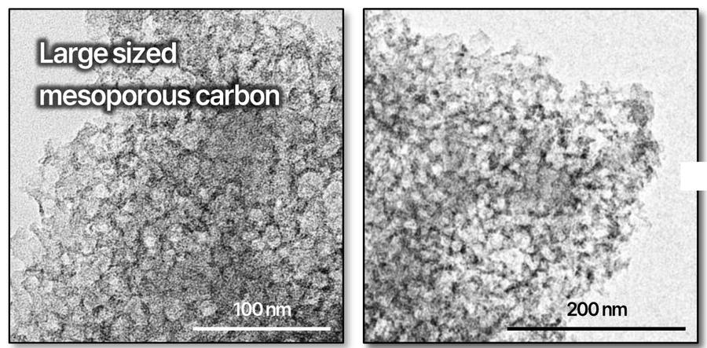
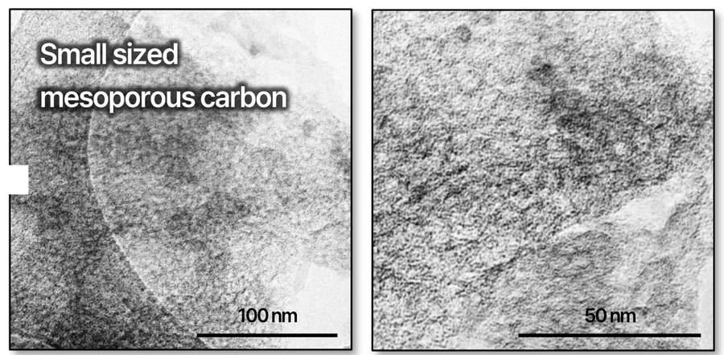
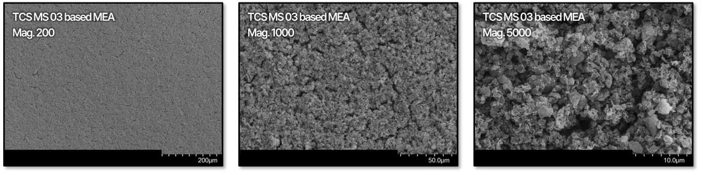
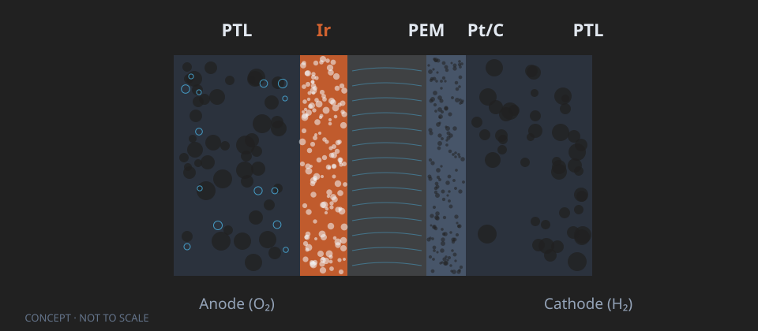
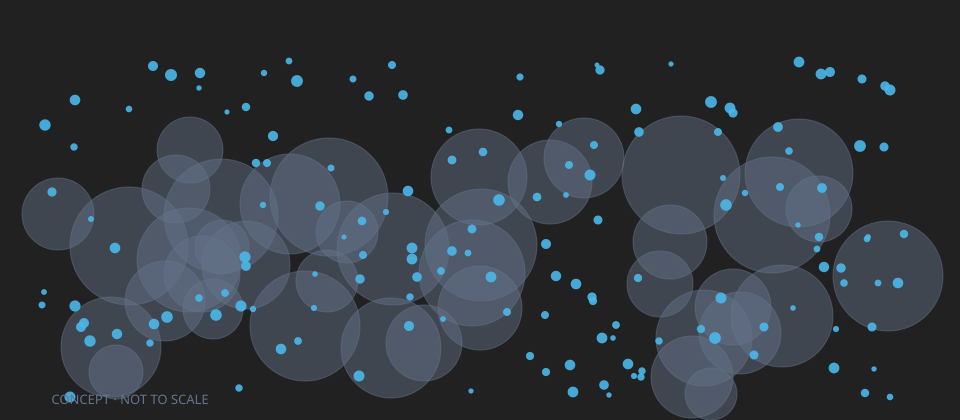

電極のコアとなる材料を、自社で。The core materials of the electrode, made in-house.
燃料電池用の炭素担体（MPC）と、PEM水電解用のIr系触媒・CCM・MEA。用途ごとに製品とデータを分けています。Carbon supports (MPC) for fuel cells; Ir-based catalysts, CCMs and MEAs for PEM water electrolysis. Products and data are separated by application.
ご関心の分野をお選びくださいChoose your field
燃料電池（PEMFC）向けFor fuel cells (PEMFC)
触媒メーカー様向けの炭素担体 MPC。単セル評価データ、実測のTEM・SEM像。MPC carbon support for catalyst makers. Single-cell data, measured TEM/SEM images.
燃料電池へFuel cells水電解（PEMWE）向けFor water electrolysis (PEMWE)
Ir系アノード触媒から CCM・MEA まで一貫製造。耐久試験データ（累計932 h）。Ir-based anode catalyst through CCM and MEA, made in-house. Durability data (932 h in total).
水電解へWater electrolysis燃料電池（PEMFC）向け：炭素担体 MPCFuel cells (PEMFC): MPC carbon support
このセクションは、燃料電池（PEMFC）の触媒に使う炭素担体「MPC」のご紹介です。水電解のご用件は B 水電解セクション をご覧ください。This section is about “MPC”, the carbon support for fuel-cell (PEMFC) catalysts. For water electrolysis, see Section B.
当社資料に記載された評価の代表値。試験条件により異なり、保証値ではありません。Representative values reported in TCS material; they vary with test conditions and are not guaranteed.
当社の位置（燃料電池）Where we sit (fuel cell)
TCS＝当社が設計・製造する範囲。触媒は触媒メーカー様が当社担体で製造し、当社はMEA単セルで担体を評価しています。TCS = what we design and make. Catalyst makers make the catalyst on our support; we evaluate the support in single-cell MEAs.
MPCとはWhat MPC is
細孔径・比表面積・粒径を用途に合わせて設計した炭素担体（当社独自製法）です。連通したメソ細孔で白金の利用率を高め、細孔内の白金の被毒・溶出を抑える設計です。A carbon support designed for pore size, surface area and particle size per application (proprietary process). Connected mesopores aim at high Pt utilization, with Pt inside the pores designed to reduce poisoning and dissolution.



MPC 製品グレードMPC product grades
細孔径のレンジ（nm）。Pore-size range (nm).
| 製品Product | 細孔径Pore size | 粒度Particle size | 比表面積SSA | 特長Note |
|---|---|---|---|---|
| TCS MS 03 | 10–20 nm | 最小 0.4 µmdown to 0.4 µm | ご要望に応じて提示on request | 大きい細孔 → 高性能Large pores, high performance |
| TCS MS 04 | 5–30 nm | 最小 0.4 µmdown to 0.4 µm | 約 1,000 m²/g（BET）≈1,000 m²/g (BET) | 広い細孔分布 → バランスWide distribution, balanced |
| TCS MS 05 | 3–7 nm | 最小 0.4 µmdown to 0.4 µm | ご要望に応じて提示on request | 小さい細孔 → 高耐久Small pores, high durability |
← 表は横にスクロールできます← Tables scroll sideways
細孔径・粒度は当社社内測定の代表値。MS 04の比表面積は評価試料のBET測定例 1,008 m²/g（約 1,000 m²/g と表記）。比表面積はお客様の要求に応じて設計できます。Pore and particle sizes are representative TCS internal values. MS 04 SSA: BET measurement of an evaluation sample, 1,008 m²/g (shown as ≈1,000 m²/g). SSA can be designed to customer requirements.
触媒耐久加速試験（30,000サイクル）Catalyst-durability AST (30,000 cycles)
2.0 A/cm² での電圧低下率（小さいほど良い）。軸 0–40%。Voltage loss at 2.0 A/cm² (lower is better). Axis 0–40%.
| 試料Sample | 初期電圧（V）Initial V 0.8 A/cm² | 30k後電圧（V）After 30k V 0.8 A/cm² | 低下率（%）V loss (%) 0.8 A/cm² | 低下率（%）V loss (%) 2.0 A/cm² | 初期ECSAInitial ECSA m²/gPt | 30k後ECSAAfter 30k ECSA m²/gPt | ECSA低下率（%）ECSA loss (%) |
|---|---|---|---|---|---|---|---|
| TCS MS 04 Pt/C（50%） 第3世代開発品Gen-3 | 0.684 | 0.637 | 6.9 | 29.3 | 71.7 | 29.3 | 59.1 |
| 高比表面積カーボン Pt/C（50%）High-SSA carbon Pt/C (50%) 市販触媒Commercial | 0.681 | 0.646 | 5.1 | 32.2 | 85.9 | 37.7 | 56.1 |
30,000サイクル後の電圧低下率は 0.8 A/cm² で 6.9%（市販品 5.1%）、2.0 A/cm² で 29.3%（市販品 32.2%）。ECSA低下率は 59.1%（市販品 56.1%）。TCS試料はMS 04担体 Pt/C 50%で、0.646 V の出力値（Pt/C 60%）とは別試料。I/C比は試料ごとに異なるため、担体単独の優劣を示す比較ではありません。当社資料掲載値。試験条件の詳細はお問い合わせください。Voltage loss after 30,000 cycles: 6.9% at 0.8 A/cm² (commercial 5.1%), 29.3% at 2.0 A/cm² (commercial 32.2%). ECSA loss: 59.1% (commercial 56.1%). The TCS sample is 50% Pt/C on MS 04, a different sample from the 0.646 V output value (60% Pt/C). I/C ratio differs by sample, so this is not a comparison of the support alone. Values as reported in TCS material; please contact us for detailed test conditions.
出典：当社 炭素開発資料（2026年11月版）。Source: TCS carbon development material (Nov. 2026).
水電解（PEMWE）向け：Ir系アノード触媒・CCM/MEAWater electrolysis (PEMWE): Ir-based anode catalyst, CCM/MEA
このセクションは、PEM水電解のアノード触媒（Ir系）と、それを使ったCCM・MEAのご紹介です。MPC（炭素担体）は燃料電池用の製品です。そちらは A 燃料電池セクション をご覧ください。This section is about Ir-based anode catalysts for PEM water electrolysis and the CCMs and MEAs made with them. MPC (carbon support) is a fuel-cell product — see Section A.
当社の位置（水電解）Where we sit (water electrolysis)
TCS＝当社が設計・製造する範囲。Ir使用量の低減を目指したIr系アノード触媒から、CCM・MEAまで一貫製造しています。TCS = what we design and make. Made in-house from an Ir-based anode catalyst designed to reduce iridium use, through CCM and MEA.
構成のイメージStructure at a glance


CCM・MEAの実物写真や分析像は、条件を確認のうえ個別にご案内します。Photos and analytical images of actual CCM/MEA are discussed individually after confirming conditions.
仕様Specification
- アノードAnode
- Ir系酸化物 / 酸化物担体（TiO₂・ATO 等）Ir-based oxides / oxide supports (TiO₂, ATO, etc.)
- カソードCathode
- Pt/C (HER)
- 耐久試験Durability
- AST 1,000サイクル・電流ステップ 2,000サイクル・定電流区間運転 累計932 h（2.0 A/cm²・80 ℃）AST 1,000 cycles · current-step 2,000 cycles · segmented constant-current 932 h (2.0 A/cm², 80 ℃)
PEM水電解 CCM/MEA 耐久試験PEM electrolysis CCM/MEA durability tests
| 試験Test | 条件Condition | 期間Length | 結果Result |
|---|---|---|---|
| 電圧サイクルASTVoltage-cycling AST | 1.6–2.0 V, 500 mV/s, 80 ℃ | 1,000 cycles | 当該評価試料では、I–V変化が市販比較品より小さい結果でした（比較条件の詳細はお問い合わせください）For the tested sample, smaller I–V change than the commercial reference (contact us for comparison conditions) |
| 電流ステップCurrent-step cycling | 1.3 A/cm²で30秒 → 1.8 A/cm²で30秒、80 ℃1.3 A/cm² for 30 s → 1.8 A/cm² for 30 s, 80 ℃ | 2,000 cycles | BOL・EOLでI–V測定I–V at BOL and EOL |
| 定電流（区間運転）Constant current, segmented | 定電流 2.0 A/cm², 80 ℃Constant current 2.0 A/cm², 80 ℃ | 932 h | 詳細はお問い合わせくださいDetails on request |
932 h の内訳（6区間・単位 h）。区間の間にN₂パージ・休止・性能評価。休止後に電圧は一部回復し、不可逆劣化は別途定量していません。Breakdown of the 932 h (six segments, h), with N₂ purge, rest and performance checks between them. Voltage partly recovers after rests; irreversible degradation was not separately quantified.
出典：当社 炭素開発資料（2026年11月版）、当社単セル試験記録。Source: TCS carbon development material (Nov. 2026); TCS single-cell test records.
評価・供給までの進め方How we work with you
燃料電池・水電解に共通の進め方です。まずは小さな評価から、段階を踏んで進めます。The same approach for fuel cells and electrolysis. Start with a small evaluation and proceed step by step.
サンプル評価Sample evaluation
仕様・供給可否を確認のうえ、評価用サンプルを個別にご案内します。After checking specification and availability, we discuss evaluation samples individually.
共同評価Joint evaluation
試験条件・試料仕様をお知らせいただければ、試験計画と試料提供について個別にご相談します。Tell us your test protocol or sample specification; we will discuss a test plan and samples individually.
供給段階Supply stage
仕様の調整はご相談ください。数量・納期は仕様確認後にご連絡します。Specifications can be tuned — ask us. Quantity and lead time follow after spec review.
資料・サンプルのご相談Talk to us about materials and samples
ご関心の分野を選んで、用途・試験条件・ご希望の仕様をひと言お送りください。担当よりご連絡します。Pick your field and tell us your application, test conditions and desired specification in a line or two. We will get back to you.
水電解（Ir触媒・CCM/MEA）Water electrolysis (Ir catalyst · CCM/MEA)
触媒・CCM・MEAの評価Catalyst, CCM and MEA evaluation
水電解のご相談Electrolysis inquiryPCで続きを見るContinue on your PC
このページのリンクを、PCや自分宛てに送れます。Send this page's link to your PC or to yourself.
東京都港区新橋3-11-8 オーイズミ新橋第2ビルOizumi Shimbashi No.2 Bldg., 3-11-8 Shimbashi, Minato-ku, Tokyo
Tel +81-3-6809-2244
メールのお問い合わせ先：E-mail inquiries to: dean@thecarbon.studio
THE CARBON STUDIO, INC. （本社・韓国）(HQ, Korea)
4, Techno 2-ro, Yuseong-gu, Daejeon, Korea
Tel +82-42-933-1335 · www.thecarbon.studio （韓国語）(Korean)